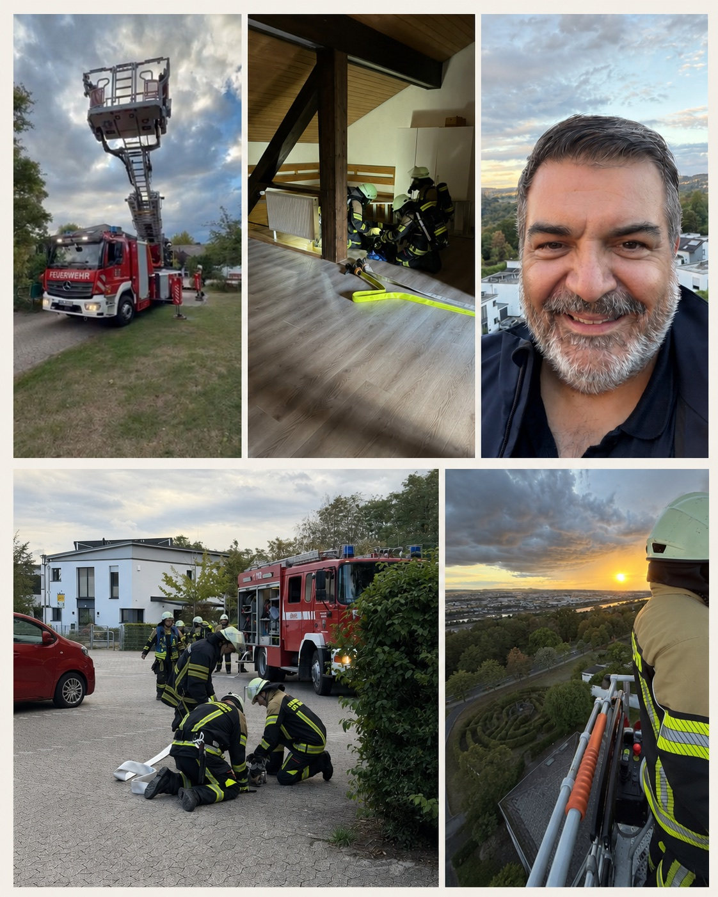

Am 28. August 2026 hat der Löschzug Vallendar bei seiner Jahresübung gezeigt, worauf es im Ernstfall ankommt: auf eine gute Ausbildung, klare Abläufe und Menschen, die sich aufeinander verlassen können.

Auf Einladung des Löschzugs war ich als Vorsitzender der CDU-Fraktion im Verbandsgemeinderat vor Ort. Auch Vertreter und Sprecher der anderen im Verbandsgemeinderat vertretenen Fraktionen waren eingeladen. Das war ein gutes Zeichen gemeinsamer kommunalpolitischer Wertschätzung. Im Mittelpunkt des Abends standen aber zu Recht die Feuerwehr und ihre Arbeit.
Ein Szenario mit mehreren Herausforderungen
Angenommen wurde ein Brand im evangelischen Gemeindezentrum in Vallendar. Zwei Personen galten als vermisst und mussten unter realitätsnahen Bedingungen gesucht und gerettet werden. Die Einsatzkräfte arbeiteten sich durch das Gebäude, stimmten ihre Schritte miteinander ab und brachten die vermissten Personen in Sicherheit.
Im weiteren Verlauf kam eine zusätzliche Lage hinzu: der angenommene Notfall einer Einsatzkraft. Auch darauf mussten die Kameradinnen und Kameraden unmittelbar reagieren. Die verunglückte Einsatzkraft wurde durch die eigenen Kräfte gerettet. Gerade dieser Teil der Übung machte deutlich, dass die Feuerwehr nicht nur den Schutz anderer im Blick haben muss. Sie muss auch vorbereitet sein, wenn in den eigenen Reihen etwas passiert.
Für Außenstehende wird bei einer solchen Übung sichtbar, wie viele einzelne Handgriffe ineinandergreifen müssen. Aufgaben werden verteilt, Informationen weitergegeben und Entscheidungen unter Zeitdruck getroffen. Damit das im Ernstfall funktioniert, braucht es regelmäßiges Training. Sicherheit entsteht nicht durch Zufall, sondern durch Vorbereitung und eingespielte Zusammenarbeit.
Neue Drehleiter im praktischen Einsatz
Zum Übungsablauf gehörte auch der Einsatz der neuen Drehleiter. Moderne Fahrzeuge und verlässliche Technik sind für eine leistungsfähige Feuerwehr unverzichtbar. Sie schaffen Reichweite, Sicherheit und Möglichkeiten, die im Ernstfall entscheidend sein können.
Zum Abschluss durften die eingeladenen politischen Vertreter im Korb der Drehleiter selbst mit nach oben fahren. Dieser Perspektivwechsel war eindrucksvoll. Er vermittelte einen unmittelbaren Eindruck davon, in welcher Höhe die Einsatzkräfte arbeiten und wie wichtig dabei Ausbildung, Ruhe und Vertrauen in das Material sind.
Technik hilft, Menschen entscheiden
Die Verbandsgemeinde trägt Verantwortung dafür, dass ihre Feuerwehr zeitgemäß ausgestattet ist. Fahrzeuge, Schutzkleidung und technische Geräte müssen verfügbar, zuverlässig und auf die örtlichen Anforderungen abgestimmt sein. Das kostet Geld, ist aber eine notwendige Investition in die Sicherheit der Menschen in unserer Verbandsgemeinde.
Gute Technik allein löscht jedoch keinen Brand und rettet keine vermisste Person. Entscheidend sind die Menschen, die ihre Freizeit investieren, regelmäßig üben, Verantwortung übernehmen und im Einsatz als Mannschaft handeln. Dieses Ehrenamt verdient Dank und Anerkennung. Es braucht zugleich politische Rückendeckung und verlässliche Rahmenbedingungen.
Die Jahresübung hat gezeigt, wie ernsthaft und professionell sich der Löschzug Vallendar auf mögliche Einsatzlagen vorbereitet. Solche Übungen geben den Einsatzkräften Sicherheit in ihren Abläufen und der Bevölkerung Vertrauen in ihre Feuerwehr.
Mein Dank gilt allen Kameradinnen und Kameraden, die sich im Löschzug Vallendar und in der Freiwilligen Feuerwehr der Verbandsgemeinde Vallendar für unsere Sicherheit engagieren.
Dieser Beitrag gibt meine persönliche politische Bewertung wieder. Er ist keine offizielle Mitteilung der Stadt Vallendar, der Verbandsgemeinde Vallendar, der Freiwilligen Feuerwehr, der CDU oder einer CDU-Fraktion.